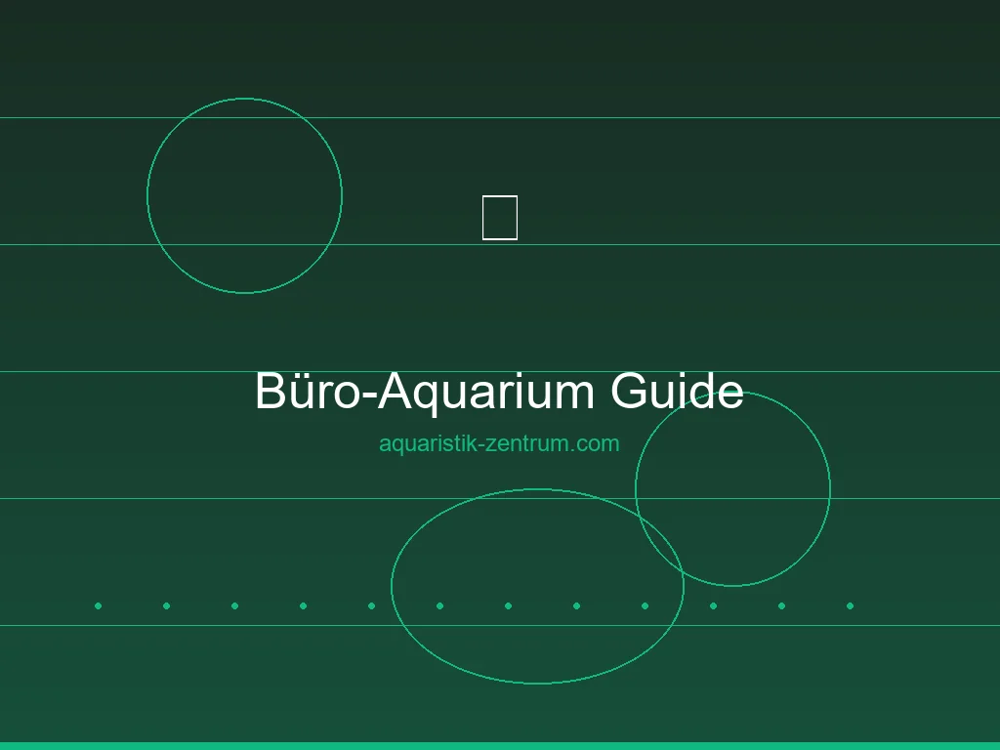

Büro-Aquarium Guide: Warum ein Aquarium am Arbeitsplatz eine Bereicherung ist
Stell dir vor: Du sitzt an deinem Schreibtisch, die Mittagsmüdigkeit macht sich breit, der Bildschirm flimmert – und dein Blick fällt auf ein kleines, leise plätscherndes Aquarium neben dir. Bunte Garnelen tanzen zwischen grünen Pflanzen, ein Kampffisch gleitet majestätisch durchs Wasser, und für einen Moment bist du komplett im Hier und Jetzt. Genau diese kleine Auszeit kann ein Büro-Aquarium schenken.
Immer mehr Arbeitnehmer und Selbstständige entdecken das Aquarium als Bereicherung für ihren Arbeitsplatz. Was früher nur in Vorstandsetagen oder Arztpraxen zu finden war, hält heute Einzug in Großraumbüros, Home-Offices und Coworking-Spaces. Kein Wunder: Ein Aquarium am Arbeitsplatz vereint ästhetische Raumgestaltung mit nachweislichen positiven Effekten auf Konzentration und Wohlbefinden.
Doch ein Büro-Aquarium unterscheidet sich in einigen Punkten von einem klassischen Aquarium zu Hause. Die Standortbedingungen sind anders, die Pflege muss in den Arbeitsalltag integrierbar sein, und nicht jede Technik ist für den leisen Bürobetrieb geeignet. In diesem Guide erfährst du Schritt für Schritt, wie du dein Büro-Aquarium richtig planst, einrichtest und pflegst – und worauf du besonders achten solltest.
Vorteile: Stressreduktion, Konzentrationsförderung und positive Raumwirkung
Ein Aquarium am Arbeitsplatz ist weit mehr als ein dekoratives Accessoire. Zahlreiche Studien belegen die positive Wirkung von Aquarien auf den Menschen – und im Büro kommen diese Effekte besonders zur Geltung.
Stressreduktion durch Unterwasserwelt
Die beruhigende Wirkung von Aquarien ist wissenschaftlich gut dokumentiert. Bereits das kurze Betrachten eines Aquariums kann den Blutdruck senken und die Herzfrequenz reduzieren. Die gleichmäßigen Bewegungen der Fische, das sanfte Schimmern des Lichts im Wasser und die beruhigende Geräuschkulisse eines Filters versetzen uns in einen Zustand entspannter Wachsamkeit – ideal, um zwischen zwei Meetings kurz durchzuatmen. In stressigen Phasen bietet das Aquarium einen visuellen Anker, der hilft, den Kopf freizubekommen und neue Energie zu tanken.
Bessere Konzentration und Kreativität
Mikropausen, in denen der Blick kurz abschweift, sind nachweislich förderlich für die Produktivität. Das Aquarium bietet dafür den perfekten Zielpunkt. Anders als der Blick aus dem Fenster oder aufs Smartphone lenkt es nicht ab, sondern sorgt für eine sanfte, kurze Erholung der Aufmerksamkeit. Viele Menschen berichten, dass sie nach einem kurzen Blick ins Aquarium fokussierter und kreativer weiterarbeiten können. Die gleichmäßigen Bewegungen im Wasser wirken wie eine sanfte Meditation für die Augen.
Positive Raumwirkung und Image
Ein gepflegtes Aquarium wertet jeden Arbeitsraum optisch auf. Es schafft eine angenehme Atmosphäre, die sowohl Mitarbeiter als auch Besucher und Kunden positiv wahrnehmen. In Empfangsbereichen, Besprechungsräumen oder Arztpraxen signalisiert ein Aquarium Sorgfalt, Wertschätzung und eine angenehme Arbeitsumgebung. Zudem verbessert das verdunstende Wasser das Raumklima – ein willkommener Nebeneffekt in beheizten oder klimatisierten Büros mit trockener Luft.
Die schönsten Aquarien fürs Büro bei Amazon entdecken
Viele Hersteller bieten spezielle Komplettsets mit leiser Technik an, die sich perfekt für den Schreibtisch eignen. Von 10 bis 30 Litern ist für jeden Arbeitsplatz das passende Set dabei.
Spezielle Flüsterfilter mit geringer Lautstärke sind die erste Wahl fürs Büro-Aquarium. Sie stören weder Telefonate noch konzentriertes Arbeiten.
* Bei den mit Sternchen gekennzeichneten Links handelt es sich um Affiliate-Links. Wenn du über diese Links einkaufst, erhalten wir eine kleine Provision, ohne dass für dich zusätzliche Kosten entstehen. So unterstützt du unsere Arbeit.
Das richtige Becken: Welche Größe und Form für den Schreibtisch?
Die Wahl des passenden Beckens ist der wichtigste Schritt auf dem Weg zum Büro-Aquarium. Anders als zu Hause, wo oft Platz für größere Aquarien ab 60 Litern ist, sind am Arbeitsplatz meist kompakte Maße gefragt. Die gute Nachricht: Im Nano-Bereich zwischen 10 und 30 Litern gibt es eine hervorragende Auswahl an Becken, die optisch überzeugen und sich problemlos in den Büroalltag integrieren lassen.
Kleine Nano-Becken (10–20 Liter)
Für den direkten Schreibtisch oder ein schmales Sideboard sind Becken mit 10 bis 20 Litern Volumen ideal. Sie nehmen wenig Stellfläche weg und sind mit einem Gewicht von 15 bis 25 Kilogramm auch auf normalen Büromöbeln meist problemlos aufstellbar. Besonders beliebt sind:
- 20×20×25 cm (10 Liter): Ultra-kompaktes Nano-Becken für reine Garnelenhaltung oder als üppig bepflanztes Aquascape ohne Fischbesatz. Perfekt für enge Schreibtische.
- 30×20×20 cm (12 Liter): Etwas längere Form, die neben dem Monitor Platz findet. Geeignet für Garnelen und einzelne Kleinfische wie Mikrobärblinge.
- 30×25×25 cm (18,75 Liter): Kompakter Würfel mit gutem Verhältnis von Grundfläche zu Volumen. Bietet schon mehr Stabilität bei den Wasserwerten.
Mittelgroße Büro-Becken (20–30 Liter)
Wenn der Platz es erlaubt, sind Becken zwischen 20 und 30 Litern die erste Wahl für ein Büro-Aquarium. Sie bieten ein deutlich stabileres Ökosystem, erlauben eine größere Auswahl an Besatz und sind pflegetechnisch angenehmer als die kleinsten Nano-Formate.
- 30×30×30 cm (27 Liter): Der Klassiker unter den Nano-Würfeln. Optimales Einsteigerformat mit ausreichend Volumen für Garnelen, einen Kampffisch oder kleine Schwarmfische.
- 45×25×25 cm (28 Liter): Die längliche Quaderform erinnert an klassische Aquarien und bietet mehr Gestaltungsmöglichkeiten durch unterschiedliche Zonen.
- 40×25×25 cm (25 Liter): Gute Kompromissgröße, die auf vielen Sideboards und Aktenschränken Platz findet.
Unser Tipp: Starte mit einem 27-Liter-Würfel (30×30×30 cm). Er bietet das beste Verhältnis von Stellfläche zu Wasservolumen und ist groß genug, um stabile Wasserwerte zu halten, aber klein genug, um auf fast jeden Schreibtisch zu passen.
Standort: Lichtverhältnisse, Gewichtsbelastung und mehr
Der Standort entscheidet maßgeblich über den Erfolg deines Büro-Aquariums. Falsch platziert, können Algen, Überhitzung oder Unfälle die Freude schnell trüben. Achte auf folgende Faktoren:
Lichtverhältnisse
Direktes Sonnenlicht ist der häufigste Feind eines Aquariums am Arbeitsplatz. Fensterplätze sind zwar verlockend, aber Sonneneinstrahlung führt zu übermäßigem Algenwachstum und starken Temperaturschwankungen. Stelle dein Aquarium möglichst so auf, dass es kein direktes Sonnenlicht abbekommt. Die Beleuchtung übernimmt die LED-Leuchte des Aquariums – so hast du die Lichtdauer und -intensität selbst unter Kontrolle.
Stromanschluss
Ein Aquarium benötigt durchgehend Strom für Filter, Heizung und Beleuchtung. Achte darauf, dass sich in Reichweite eine ausreichend dimensionierte Steckdose befindet. Verwende eine Kabelbrücke oder einen Kabelkanal, um Stolperfallen zu vermeiden. Wichtig: Das Kabel sollte nicht im Weg liegen und bei Reinigungsarbeiten leicht erreichbar sein.
Gewichtsbelastung
Ein Liter Wasser wiegt ein Kilogramm – plus Becken, Bodengrund, Dekoration und Technik kommen schnell 15 bis 35 Kilogramm zusammen. Prüfe vor dem Aufstellen, ob dein Schreibtisch oder das Sideboard dieses Gewicht dauerhaft tragen kann. Die meisten höhenverstellbaren Schreibtische und Büromöbel aus Massivholz oder stabiler Spanplatte sind dafür ausgelegt. Bei älteren Möbeln oder Regalsystemen besser nachfragen oder einen Blick in die Herstellerangaben werfen.
Luftzirkulation und Temperatur
Aquarien geben Feuchtigkeit ab – das ist grundsätzlich gut fürs Raumklima, sollte aber nicht zu Staunässe führen. Achte auf eine ausreichende Luftzirkulation um das Becken herum. Halte einen Abstand von mindestens 5–10 cm zu Wänden und anderen Geräten ein. In klimatisierten Büros kann es sinnvoll sein, die Wassertemperatur mit einer zuverlässigen Heizung stabil zu halten – Klimaanlagen kühlen oft auch nachts oder am Wochenende herunter.
Technik: Leise Filter, LED und Heizung fürs Büro
Im Büro ist leise Technik das A und O. Während zu Hause ein dezentes Brummen oft toleriert wird, muss ein Büro-Aquarium nahezu geräuschlos arbeiten. Niemand möchte in Telefonaten oder bei konzentrierter Arbeit von einem surrenden Filter gestört werden.
Leise Filter fürs Büro-Aquarium
Die Geräuschentwicklung des Filters ist der mit Abstand wichtigste technische Faktor. Hier haben sich drei Lösungstypen bewährt:
- Mini-Außenfilter: Die eleganteste Lösung. Modelle wie der OASE Filtosmart 60 oder der Eheim Ecco Pro laufen extrem leise und verschwinden diskret neben oder unter dem Schreibtisch. Der geringe Abstand zum Becken sorgt für kurze Schlauchwege und minimiert Strömungsgeräusche.
- Spongebob-/Hamburger-Mattenfilter (HMF): Absolut geräuschlos, da sie nur mit einer kleinen Luftpumpe oder einer Mini-Strömungspumpe betrieben werden. Sie sind wartungsarm und bieten eine riesige Filterfläche. Perfekt für alle, denen kein Filtergeräusch leise genug sein kann.
- Hochwertige Innenfilter: Einige kompakte Innenfilter wie der Eheim Pickup 60 sind überraschend leise. Sie sind schnell installiert und leicht zu reinigen. Achte beim Kauf auf Dezibel-Angaben und Kundenbewertungen zur Lautstärke.
LED-Beleuchtung mit wenig Wärme
Moderne LED-Beleuchtung ist für Büro-Aquarien ideal: Sie entwickelt kaum Wärme, verbraucht wenig Strom und lässt sich in der Farbe und Intensität oft dimmen. Wähle eine Leuchte mit 6500–8000 Kelvin und einer Leistung von etwa 0,3–0,5 Watt pro Liter. Besonders praktisch sind Modelle mit integrierter Timer-Funktion, die das Licht automatisch ein- und ausschalten – so musst du am Wochenende nicht extra ins Büro fahren. Achte darauf, dass die Beleuchtung nicht direkt in die Augen der Kollegen blendet – eine Blende oder seitliche Positionierung hilft.
Heizung mit präziser Steuerung
Für Nano-Becken bis 30 Liter reichen kompakte Heizstäbe mit 25–50 Watt. Edelstahl- oder Titanheizungen sind bruchsicherer als Glasvarianten – ein wichtiger Aspekt, falls das Becken in einem belebten Bürobereich steht. Ein zuverlässiger Thermostat ist Pflicht, denn Temperaturschwankungen setzen den Tieren im kleinen Wasservolumen stark zu. Für mehr Sicherheit empfehlen wir einen zweiten, kleinen Heizstab als Reserve für kalte Wochenenden, falls die Gebäudeheizung heruntergefahren wird.
Pflegeleichte Bepflanzung: Anubias, Javafarn und Mooskugeln
Im Büro-Aquarium ist pflegeleichte Bepflanzung Trumpf. Du hast keine Zeit für aufwendigen Pflanzenschnitt, CO₂-Anlagen oder tägliche Düngung. Die folgenden Pflanzen sind extrem robust, wachsen langsam und sehen trotzdem fantastisch aus:
- Anubias-Arten (Anubias nana, Anubias nana petite): Die Königin der pflegeleichten Aquarienpflanzen. Sie wächst extrem langsam, braucht wenig Licht und keine CO₂-Düngung. Am besten auf einer Wurzel oder einem Stein festgebunden – niemals den Rhizom (das dicke Stück, aus dem die Blätter wachsen) in den Bodengrund stecken, sonst fault sie.
- Javafarn (Microsorum pteropus): Ebenfalls ein Pflegeleichter. Kommt mit wenig Licht aus und kann auf Wurzeln oder Steinen aufgebunden werden. Die schmalen, hellgrünen Blätter setzen schöne Akzente. Es gibt verschiedene Sorten wie den schmalblättrigen "Needle Leaf" oder den kleinen "Narrow".
- Mooskugeln (Cladophora aegagropila): Die kleinen grünen Kugeln sind absolut anspruchslos, brauchen kein CO₂ und kommen mit wenig Licht aus. Sie sind echte Hingucker und müssen nur ab und zu gedreht werden, damit sie gleichmäßig grün bleiben. Perfekt für Garnelenbecken.
- Javamoos (Taxiphyllum barbieri): Wachst an fast allem fest, was im Becken ist – Steine, Wurzeln, Technik. Bildet dichte grüne Polster, die Garnelen und Jungfischen Versteckmöglichkeiten bieten. Einfach aufbinden und wachsen lassen.
- Cryptocoryne-Arten (z. B. Cryptocoryne wendtii): Schwertpflanzen, die mit wenig Licht und ohne CO₂ zurechtkommen. Sie bilden schöne Rosetten und wachsen langsam. Ideal für den Mittel- und Hintergrund.
- Bucephalandra: Die etwas edlere Alternative zu Anubias. Ebenfalls eine Aufsitzerpflanze, die sehr langsam wächst und kaum Ansprüche stellt. Sie ist aber etwas teurer in der Anschaffung.
Ein Tipp für Berufstätige: Verwende nährstoffreichen Bodengrund (Aquarium-Soil) und mische etwas Langzeitdünger (Wurzel-Tabs) unter. Dann sind die Pflanzen die ersten Monate optimal versorgt, ohne dass du regelmäßig düngen musst. Ein wöchentlicher Spritzer Flüssigdünger nach dem Wasserwechsel reicht völlig aus.
Empfohlenes Zubehör für dein Büro-Aquarium
Rundum-Sorglos-Paket: Würfelbecken 30x30x30 cm mit LED-Beleuchtung, Innenfilter und Heizung. Perfekt für den Start ins Büro-Aquarium.
Kompakter Flüsterfilter mit 200 l/h Förderleistung. Ideal für Nano-Becken und leise genug für jedes Büro. Einfach zu reinigen und wartungsarm.
Präzise Temperaturregelung für konstante Wassertemperaturen. Bruchsicheres Edelstahlgehäuse – ideal für den Bürobetrieb.
Vollspektrum-LED mit 6500K und Timer-Funktion. Ausreichend für pflegeleichte Pflanzen und energiesparend im Dauerbetrieb.
* Bei den mit Sternchen gekennzeichneten Links handelt es sich um Affiliate-Links. Wenn du über diese Links einkaufst, erhalten wir eine kleine Provision, ohne dass für dich zusätzliche Kosten entstehen. So unterstützt du unsere Arbeit.
Besatz: Garnelen, Kampffisch, Mikrobärblinge oder nur Pflanzen
Welcher Besatz ist für ein Büro-Aquarium geeignet? Das hängt von der Beckengröße, dem Pflegeaufwand und natürlich deinen persönlichen Vorlieben ab. Grundsätzlich gilt: Im Büro sollte der Besatz möglichst pflegeleicht und genügsam sein.
Garnelen – die perfekten Büro-Bewohner
Zwerggarnelen der Gattung Neocaridina sind die Idealbesetzung für jedes Büro-Aquarium ab 10 Litern. Sie sind winzig, putzig anzusehen, vermehren sich von selbst und sind extrem pflegeleicht. Die roten Red Fire, gelben Yellow Fire oder blauen Blue Dream sind echte Hingucker und benötigen keine aufwendige Technik. Eine Gruppe von 10–15 Tieren belebt das Becken und sorgt für ständige, beruhigende Bewegung. Garnelen fressen Algen und Futterreste, sodass sie aktiv zur Sauberkeit beitragen.
Kampffisch (Betta splendens)
Ein einzelner Kampffisch ist ein Klassiker für Büro-Aquarien ab 20 Litern. Die prächtigen Tiere sind faszinierend zu beobachten und entwickeln eine erstaunliche Persönlichkeit. Wichtig: Kampffische brauchen eine ruhige Strömung, ausreichend Versteckmöglichkeiten zwischen Pflanzen und eine Wassertemperatur von 24–28 °C. Mit einem Kampffisch hast du einen echten Charakter im Büro, der dich immer wieder zum Schmunzeln bringt.
Mikrobärblinge (Boraras brigittae / Boraras urophthalmoides)
Diese winzigen Fische werden maximal 2 cm groß und eignen sich für Becken ab 20 Litern. Ein Schwarm von 8–10 Tieren sorgt für lebendiges Treiben im oberen und mittleren Bereich des Aquariums. Sie sind friedlich, genügsam und benötigen keine spezielle Fütterung. Mikrobärblinge sind die perfekte Wahl, wenn du etwas mehr Bewegung im Becken haben möchtest.
Weitere Besatz-Optionen
- Zwergpanzerwelse (Corydoras pygmaeus): Winzige Bodenbewohner für Becken ab 25 Litern. Sie sind gesellig und sollten in Gruppen von mindestens 5 Tieren gehalten werden.
- Zwergkrebse: Der CPO (Oranger Zwergkrebs) ist ein farbenfroher und faszinierender Bewohner für Becken ab 20 Litern. Er braucht Verstecke und kann gegenüber Garnelen territorial werden.
- Schnecken: Posthornschnecken, Turmdeckelschnecken oder Rennschnecken sind nützliche Helfer gegen Algen und Futterreste. Sie sind absolut pflegeleicht und vermehren sich nur bei Überfütterung.
Nur Pflanzen – der Walstad-Ansatz
Du musst nicht zwingend Tiere einsetzen! Ein reines Pflanzenaquarium (oft als "Walstad-Methode" bekannt) ist die absolut pflegeleichteste und wartungsärmste Variante fürs Büro. Ein dicht bepflanztes Becken mit Nährstoffboden kommt ohne Filter und Heizung aus, wenn die Raumtemperatur konstant über 20 °C liegt. Wasserwechsel sind nur alle 2–4 Wochen nötig. Perfekt für alle, die die Ästhetik eines Aquariums schätzen, aber auf Tiere verzichten möchten.
Routine im Büro: Kurze Wege, schnelle Pflege
Der größte Vorteil eines Büro-Aquariums: Du verbringst ohnehin jeden Tag mehrere Stunden am Arbeitsplatz. Die tägliche Kontrolle ist also kein zusätzlicher Aufwand, sondern eine kurze Auszeit, die du perfekt in deinen Arbeitsalltag integrieren kannst.
Tägliche Pflege (1–2 Minuten)
- Kurzer Blick ins Becken: Schwimmen alle Tiere normal? Sind die Pflanzen okay?
- Eine kleine Prise Futter – nicht zu viel, Überfütterung ist die häufigste Fehlerquelle in Büro-Aquarien.
- Kontrolliere die Wassertemperatur auf dem Thermometer.
- Entferne grobe Verschmutzungen (z. B. abgestorbene Blätter) mit einer Pinzette.
Wöchentliche Pflege (15–20 Minuten)
- Wasserwechsel (20–30 %): Mit einem kleinen Eimer und einem Schlauch oder einer Pipette das alte Wasser absaugen und frisches, temperiertes Wasser nachfüllen. Idealerweise machst du das am Montagmorgen oder Freitagnachmittag – so starten die Tiere gut in die Woche oder ins Wochenende.
- Glas reinigen: Einen magnetischen Algenschaber kurz über die Scheiben führen.
- Filtermaterial kontrollieren: Falls nötig, den Filter schwimmend in Aquarienwasser ausspülen.
- Pflanzenschnitt: Abgestorbene oder zu lang gewordene Blätter entfernen.
Monatliche Pflege (10 Minuten)
- Wassertest mit Tropftest: pH, KH, GH, Nitrit, Nitrat und Phosphat prüfen.
- Mulm vorsichtig vom Bodengrund absaugen.
- Dünger nachdosieren (flüssig oder Wurzeltabs).
- Technik auf Funktion prüfen (Heizung, Filter, Beleuchtung).
Praktische Helfer fürs Büro: Ein kleiner 5-Liter-Kanister für den Wasserwechsel, ein Messbecher, eine Pipette und eine Pinzette passen in jede Schreibtischschublade. So sind die wichtigsten Utensilien immer griffbereit.
Besondere Herausforderungen im Büro
Ein Aquarium am Arbeitsplatz bringt einige spezifische Herausforderungen mit sich, die du von Anfang an bedenken solltest:
Wochenenden und Feiertage
An Tagen, an denen das Büro geschlossen ist, kann die Heizung ausfallen oder die Klimaanlage das Wasser stark abkühlen. Verwende daher eine zuverlässige Heizung mit präzisem Thermostat. Für längere Abwesenheiten (Urlaub, Brückentage) eignet sich ein Automatik-Futterautomat, der einmal täglich eine kleine Portion Futter abgibt. Noch besser: Garnelen und Kampffische können problemlos 3–5 Tage ohne Futter auskommen – Urlaubsfütterung ist für die meisten Büro-Aquarien nicht nötig, wenn du vorher nicht überfüttert hast.
Klimaanlage und Temperaturschwankungen
In vielen Büros laufen Klimaanlagen auch nach Feierabend und am Wochenende. Das kann zu deutlichen Temperaturschwankungen im Aquarium führen. Ein Tipp: Platziere das Becken nicht direkt unter oder vor einem Klimagerät. Eine Aquarium-Heizung mit ausreichender Leistung gleicht moderate Temperaturschwankungen zuverlässig aus. Prüfe die Wassertemperatur in den ersten Wochen nach der Aufstellung regelmäßig, um böse Überraschungen zu vermeiden.
Kollegen und Bürorichtlinien
Nicht jeder Kollege wird von deinem Aquarium begeistert sein – sei es aus Sorge vor Lärm, Geruch oder einfach aus Desinteresse. Sprich mit deinen direkten Kollegen, bevor du das Aquarium aufstellst, und hole möglichst die Zustimmung deines Vorgesetzten oder der Facility-Management-Abteilung ein. Stelle sicher, dass das Aquarium nicht im Fluchtweg steht und alle Sicherheitsvorschriften eingehalten werden. Ein positiver Nebeneffekt: Viele Kollegen finden Aquarien faszinierend und freuen sich, wenn sie ab und zu füttern oder die Tiere beobachten dürfen.
Staub und Elektronik
Ein Aquarium in der Nähe von Computern, Monitoren und anderen elektronischen Geräten erfordert Vorsicht. Achte beim Wasserwechsel darauf, dass kein Wasser auf die Elektronik tropft. Verdecke das Aquarium nicht mit Papieren oder Ordnern – die Verdunstung kann auf Dauer Dokumente beschädigen. Ein Deckel oder eine Abdeckung aus Glas reduziert die Verdunstung und schützt vor Staub.
Kosten & Budget: Was kostet ein Büro-Aquarium?
Ein Büro-Aquarium muss nicht teuer sein – aber du solltest realistisch kalkulieren. Hier eine Aufstellung der typischen Kosten:
Einmalige Anschaffungskosten
- Becken: 20–80 € (je nach Größe und Qualität, z. B. Dennerle Nano Cube, Juwel, Markenloser Würfel)
- Filter: 25–60 € (Eheim Pickup, OASE Filtosmart, HMF-Material)
- Beleuchtung: 30–80 € (NICREW, Dennerle, LED-Clip-On-Leuchten)
- Heizung: 15–40 € (JBL, Eheim, Sera, 25–50 Watt)
- Bodengrund: 10–25 € (Aquarium-Soil, Kies oder Sand)
- Pflanzen und Dekoration: 15–40 € (Mooskugeln, Anubias, Javafarn, Wurzeln, Steine)
- Besatz: 10–40 € (Garnelen ab 2 €/Stück, Kampffisch 5–15 €, Mikrobärblinge 3–6 €/Stück)
- Zubehör (Eimer, Schlauch, Pinzette, Testkit): 20–50 €
Gesamte Anschaffungskosten (geschätzt): 145–405 €, je nach Ausstattung. Ein spartanisches Nano-Setup mit Becken, einfachem Innenfilter, LED-Leuchte und ein paar Mooskugeln ist bereits für unter 150 € möglich. Ein hochwertiges Komplettset mit Design-Becken und Premium-Technik kann bis zu 400 € kosten.
Laufende Kosten pro Monat
- Strom (Filter + LED + Heizung): ca. 3–6 € (abhängig von Strompreis und Laufzeit)
- Futter: ca. 2–5 € (Hochwertiges Futter reicht monatelang)
- Dünger: ca. 1–3 € (Flüssigdünger oder Tabs)
- Wasseraufbereitung: ca. 1–2 € (Entchlorer, Wasserconditioner)
Laufende Kosten (geschätzt): 7–16 € pro Monat. Das ist deutlich weniger als der tägliche Coffee-to-go und ein sehr gutes Preis-Leistungs-Verhältnis für das tägliche Plus an Lebensqualität.
Kosten vs. Nutzen
Wenn du die Anschaffungskosten auf drei Jahre Betrieb umlegst (etwa 4–11 € pro Monat) und die laufenden Kosten von etwa 10–15 € dazurechnest, landest du bei monatlichen Gesamtkosten von 15–25 €. Dafür bekommst du einen lebendigen, beruhigenden und dekorativen Begleiter, der täglich aufs Neue Freude bereitet. Gemessen an den positiven Effekten auf Konzentration und Wohlbefinden ist das ein außergewöhnlich gutes Investment.
Fazit: Mehr Lebensqualität am Arbeitsplatz
Ein Büro-Aquarium ist weit mehr als ein modisches Accessoire. Es ist ein lebendiges Ökosystem, das deinen Arbeitsalltag bereichert, Stress reduziert und die Konzentration fördert. Mit der richtigen Planung – vom passenden Becken über die leise Technik bis zum pflegeleichten Besatz – wird das Aquarium zu einer echten Bereicherung, die weder dich noch deine Kollegen belastet.
Die wichtigsten Punkte für den Erfolg deines Büro-Aquariums:
- Wähle ein Becken ab 20 Litern – 27 Liter (30×30×30 cm) sind der ideale Kompromiss aus Größe und Stabilität.
- Setze auf leise Technik: Ein flüsterleiser Filter und eine zuverlässige Heizung sind Pflicht für den Bürobetrieb.
- Wähle pflegeleichte Pflanzen: Anubias, Javafarn und Mooskugeln wachsen auch ohne CO₂ und aufwendige Düngung.
- Starte mit Garnelen – sie sind die perfekten Büro-Bewohner: pflegeleicht, faszinierend und absolut bürotauglich.
- Integriere die Pflege in deinen Alltag: Ein täglicher Kurzblick und ein wöchentlicher Wasserwechsel sind völlig ausreichend.
- Plane für Abwesenheiten: Eine zuverlässige Heizung und ein Automatik-Futterautomat sorgen für Sicherheit an Wochenenden und im Urlaub.
Ob als ruhiger Begleiter am Einzelarbeitsplatz, als Gesprächsstarter im Großraumbüro oder als dekorativer Hingucker im Empfangsbereich – ein Büro-Aquarium ist eine Investition in deine Arbeitsqualität. Starte noch heute mit der Planung und lass dich von der beruhigenden Wirkung des Wassers begeistern. Deine Unterwasserwelt im Büro wartet auf dich!
Dieser Guide wurde zuletzt aktualisiert am 4. Juni 2026. Die Amazon-Preise und Verfügbarkeiten können abweichen. Wir empfehlen, vor dem Kauf die aktuellen Produktinformationen auf Amazon zu prüfen.